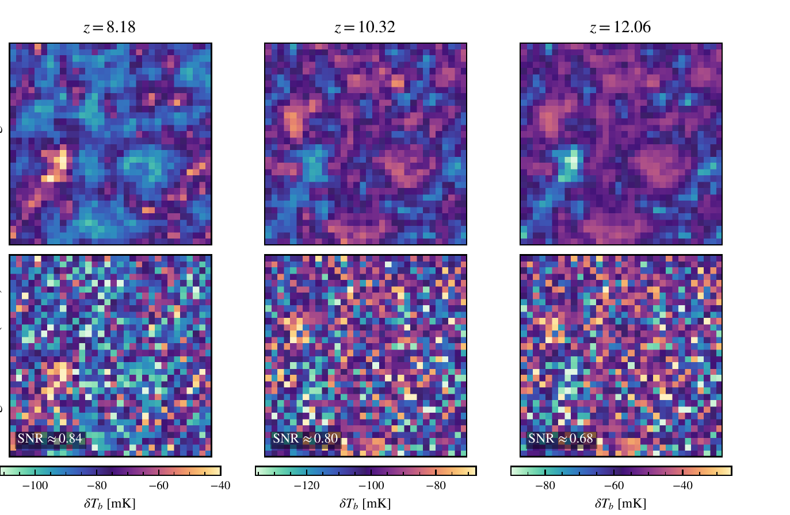

Problem and data
We observe a 98,304-dimensional map x and want the posterior over a four-dimensional parameter vector θ. The likelihood p(x | θ) exists only as a simulator, and the database is fixed at 9,828 simulations, so the ratio d/n is roughly ten.
Why classical inference fails here
The traditional route compresses the map to a power spectrum, assumes a Gaussian likelihood and runs MCMC. It breaks in three places. A high-resolution LICORICE run costs around 106 CPU hours while MCMC needs 105–106 likelihood evaluations. A Gaussian likelihood on the raw vector needs a 98,304 × 98,304 precision matrix, about 9.7 × 109 entries, whose sample estimate is singular because its rank is at most n − 1. And the field itself is strongly non-Gaussian: voxel distributions become skewed and bimodal as ionised bubbles grow.
We can sample this but cannot evaluate it. Simulation-based inference learns a surrogate from simulated (θ, x) pairs, and its sample cost scales with the dimension of the summary, so compression is not optional.
The LORELI II database
LORELI II (Meriot & Semelin 2024) holds 9,828 independent LICORICE runs at 2563 particles in a 200 h−1 cMpc box, each with its own initial conditions and parameters. Three epochs are kept, z ∈ {8.18, 10.32, 12.06}, each downsampled to 323 voxels to match the roughly 6 arcmin SKA resolution.
Two sources of randomness shape each observation. Thermal noise matching 100 hours of SKA observation is additive and roughly Gaussian, with 1,000 realisations per redshift available for augmentation. Cosmic variance is baked into each simulation as a single draw of initial conditions and cannot be augmented.

Parameters
| Parameter | Symbol | Range | Sampling |
|---|---|---|---|
| X-ray efficiency | fX | 0.1 – 10 | 13 log-spaced values |
| Star-formation timescale | τ | 7.5 – 105 Gyr | 6 values per Mmin, censored |
| Hard-to-soft X-ray ratio | rH/S | 0 – 1 | 6 values |
| Minimum halo mass | Mmin | 108 – 4×109 M⊙ | 7 log-spaced, censored |
| Escape fraction | fesc | 0.05 – 0.5 | 3 values, not inferred |
Two representations of the same observation
Path A uses the hand-crafted summaries of Semelin et al. (2025): five power-spectrum bands and five L-moments of the pixel distribution per redshift, 30 numbers in total. The power spectrum would be sufficient for a Gaussian field but is not for this one, and the pixel distribution discards spatial arrangement entirely.
Path B hands the full noisy 3×323 tensor to a 3D CNN. Colouring the voxel distributions by rH/S shows no ordering at all, so whatever information exists about that parameter lives in spatial structure, which only path B can reach.
The research question
Can an information-preserving neural compressor, trained to maximise mutual information between summary and parameters rather than to minimise a regression loss, outperform hand-crafted summary statistics when both feed the identical inference and validation pipeline?